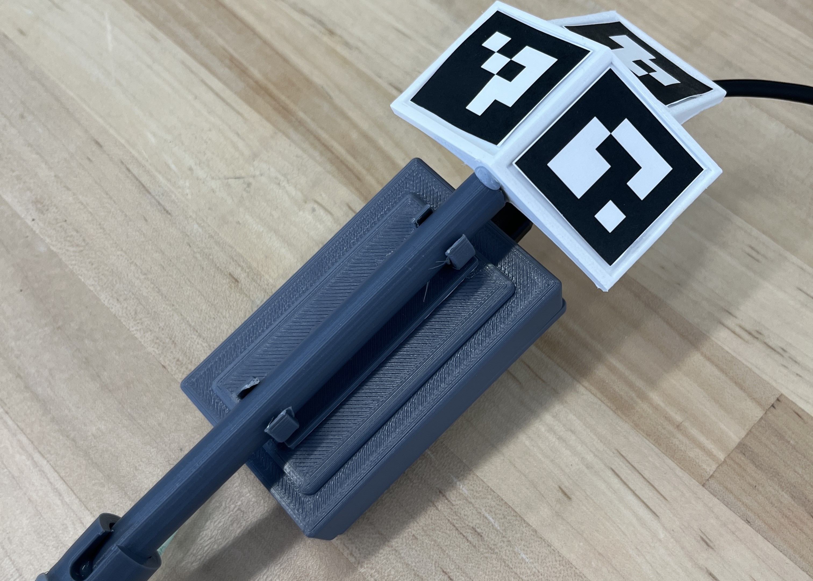
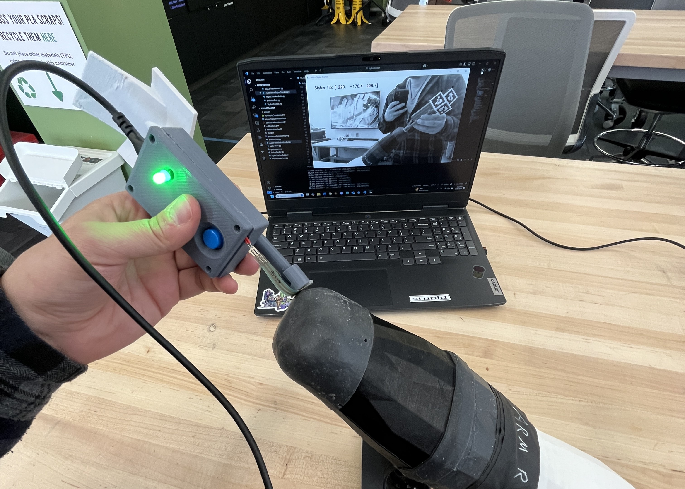
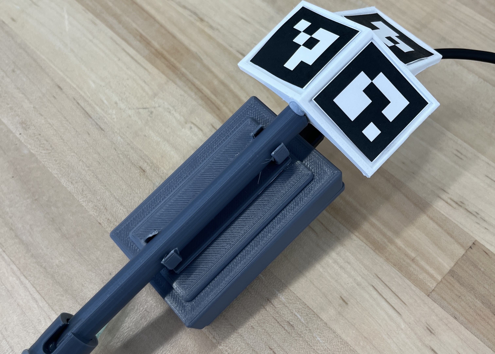
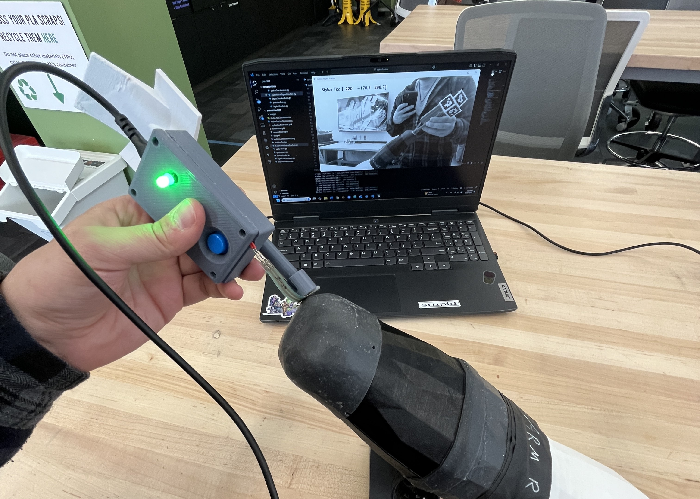
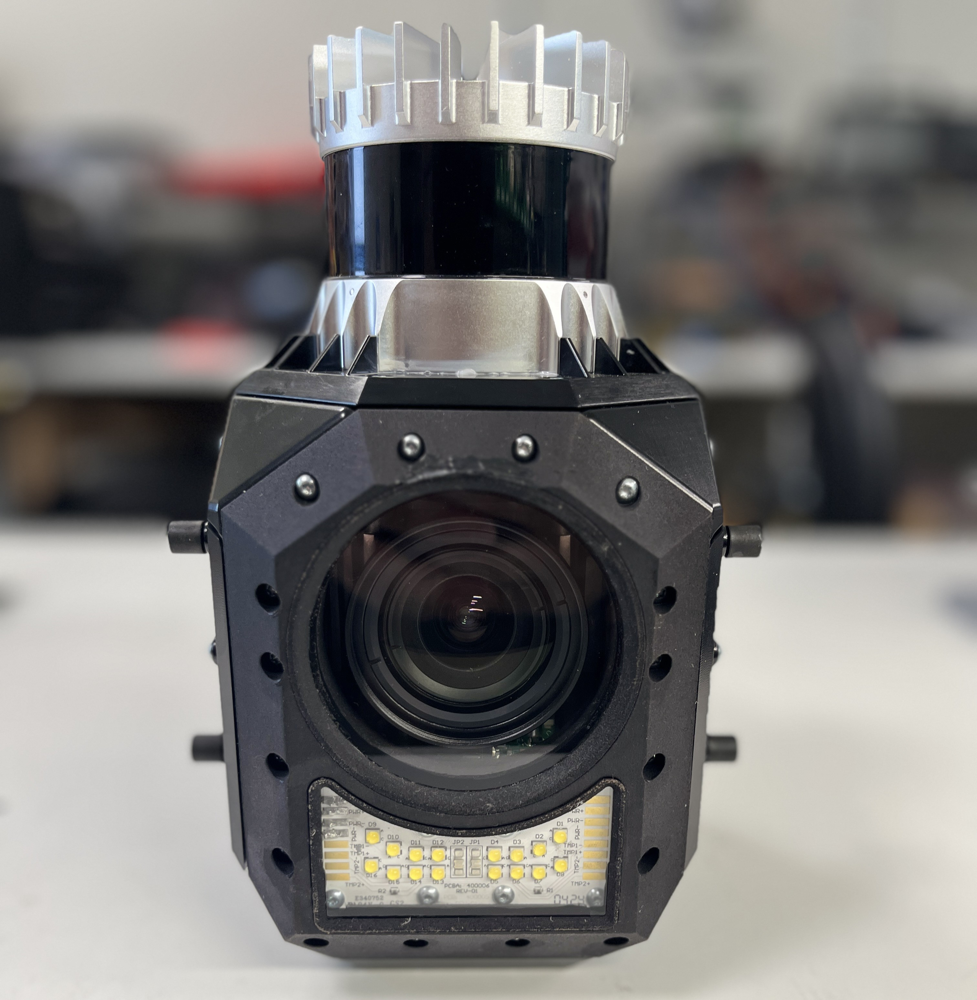
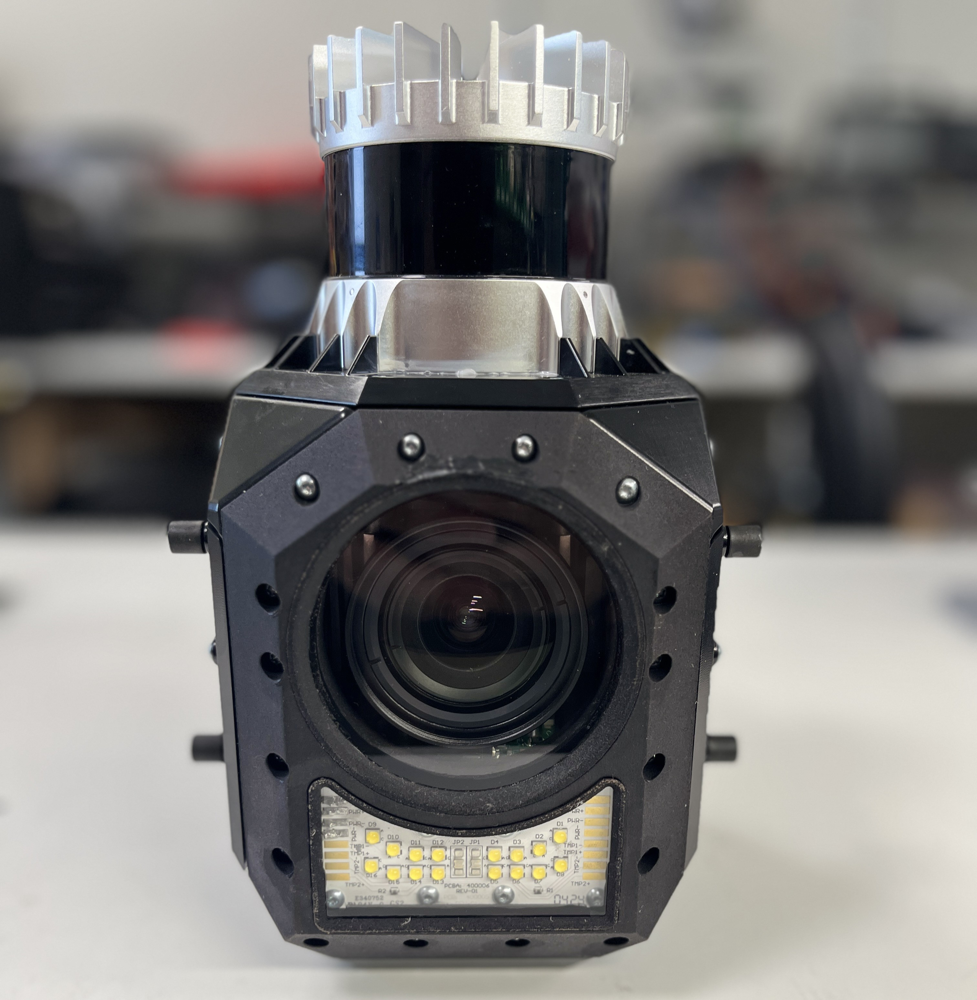
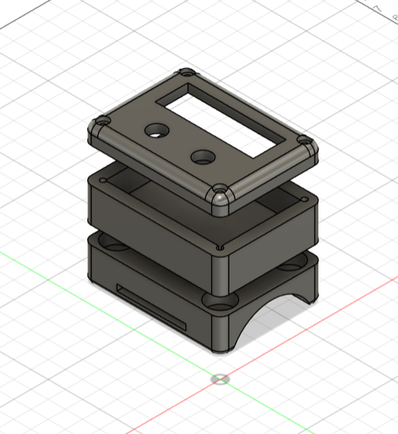
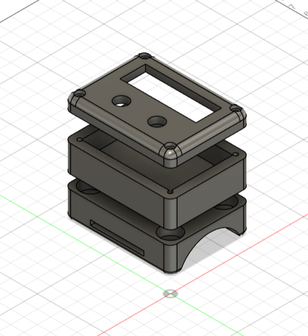
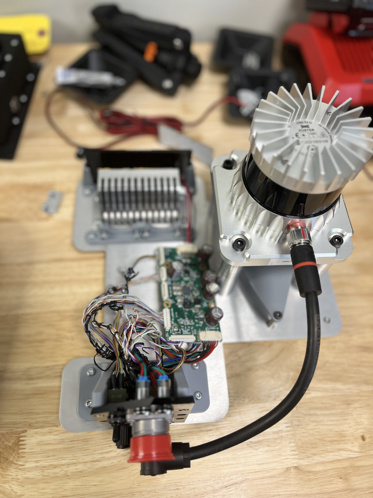
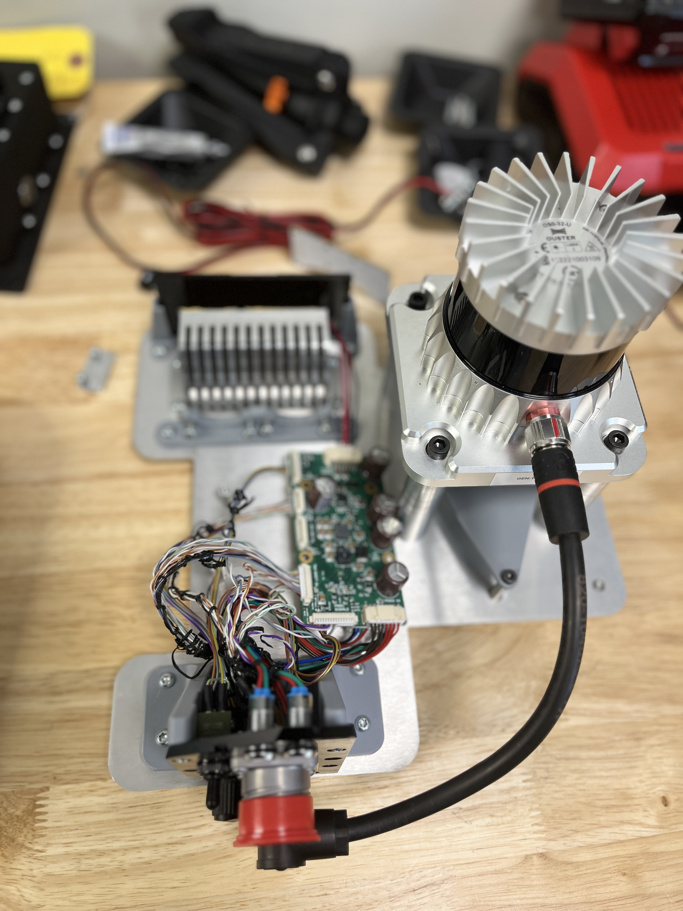

Projects and Professional Work
Documented below are a few select examples of work I have done that I feel best showcase my skills and experience in both hardware and software development and testing. These projects highlight my ability to solve complex problems, work with various technologies, and contribute to successful outcomes in both individual and collaborative settings. From game design, to computer vision research, these projects have allowed me to hone my technical skills and apply them to real-world challenges.
Digital Workflows for Prosthetic Fabrication
Presented at the National Conference of Undergraduate Research (NCUR) on April 8th, 2025. I was the lead on the research team, consisting of a myself, UX researcher Abby Zimmerman, Comp Sci honors student Matt Smith, as well as Carnegie Mellon University graduate student Rishi Basdeo. Our thesis proposed the use of low cost open source materials to create a more effective pipeline to manufacture prosthetic sockets that would have faster production times and less iterative design for a better fit. The pipeline itself is based on various methodologies, in particular, we utilized 3D scanning technology in conjunction with microcontroller based electronics to facilitate the gathering of surface topology and bone protrusion data respectively. By combining this data into one space, and using lower cost and open source components, this pipeline improves the ease of access to prosthetic manufacturing technology and closes the skill gap between prosthetist and patient.
 



Gen 1 Sensor Head Diagnosis and Teardown
At Mine Vision Systems, we provide mines with advanced scanning equipment using a unique 3D mapping system to allow for rapid data collection. The sensor head of the system houses a LIDAR unit, a high end camera, a custom build LED board, all powered by a Sensor Head Interface Module (SHIM) via I2C protocol. I perform diagnostic work on the sensor head, which includes disassembling the unit to replace components, in this case, the camera was damaged and needed replacing, requring a full teardown of the sensor head. Once reassembled, I then run the sensor head through a series of documented testing procedures to ensure full functionality, and at times do sepcific voltage testing on the SHIM to see if any solder rework needs to be done. I have also undertaken the task of creating and imporving upon the documentation for sensor head testing and diagnosis, allowing for a more streamlined process for future technicians.
 

Unity Development
I have been developing in Unity for the past two years, working on a few projects both solo and with a small team participating in game jams. Game development has allowed me to explore more practical applications of programming, as well as given me opprotunity to explore more user centered design. I have worked on a few projects, both 2D and 3D, and have gone beyone Unity to create games in more unconventional ways such as using only Java to create a retro style text adventure game with reactive images. Game development has allowed me to further my programming skills and knowledge that I gained in my time studying computer science, as well as work with some very brilliant people to make enjoyable experiences for players. Of these projects, my favorites so far have been Desk Jockey Decryption, a 2D puzzle game made for the GitHub Game Off 2024, and Roc Climber, a 2D platformer developed in JavaScript by Abby Zimmerman, with myself working on the Python and Bash scripts that allowed the game to be played with custom hardware on a Raspberry Pi 5 single board computer. You can find Roc Climber at the University of Pittsburgh Hillman Library on the 1st floor, and you can play Desk Jockey Decryption at the link below.
Desk Jockey Decryption Itch.io LinkMakerspace Information Kiosk
I designed and built a kiosk for the University of Pittsburgh's Open Lab, a makerspace that allowed students to work with emerging technologies such as 3D printing, laser cutting, and CNC milling. The kiosk was created to not only demonstrate the capabilities of the Open Lab, but to be an easy to acces information hub for events, workshops, and general information. The kiosk is housed in a 3D printed casing made to look like a retro personal computer, and uses a Raspberry Pi 5 single board computer to locally run a web server that hosts the kiosk's web page. The kiosk is regualrly updated with new information, designed to automatically reformat and refresh the pages containing event and workshop information. You can visit the kiosk today at the Open Lab, and can find a repository with the code for the kiosk on my public GitHub page.
Wearable Technology Prototyping
An entry for an engineering make-a-thon at the University of Pittsburgh, this project was a prototype for a wearable device aimed at OCD symptom management for psychiatric patients. The casings were designed using Fusion360 CAD software to house the electronics while being ergonimical, yet as compact as possible. The device consisted of a compute module, housing a liquid crystal display, some buttons for user input, and a microcontroller and breadboard. The device would be activated by the user when they felt a the need to deescalate a compulsion, and would guide them through a series of interatcions based on binary input. The compute module was also removable, allowing for some modularity. This project was a great opprotunity to test my design and prototyping skills under pressure, as we has 48 hours to design, build, and present the prototype to a panel of judges. I have since done some deisgn iterations, including more biometric based input and data collection.
 


I2C Testing and PCB Rework
The Sensor Head Interface Module (SHIM) uses I2C protocol to communicate with the various components of the sensor head, such as the LIDAR unit and the camera. Due to design constraints, and the rugged environment the sensor head is used in, the SHIM board is damaged and this frequently results in communication failure between the compute module and sensor head peripherals. Given this is a common point of failure for these boards, the engineering team at Mine Vision Systems has developed a testing rig that is made of the essential components of the sensor head, allowing the SHIM board to be exposed while tested so it is possible to pull voltage differences and check for damaged components. My contribution to this project was to rework some of the wiring between the SHIM and the components, adding in properly rated switches to disconnect specific components from the SHIM board safely. This allows for faster diagnosis of instances of I2C failure due to damage beyond the SHIM, such as a short in the Illuminator LED board causing the SHIM to become damaged.
 
